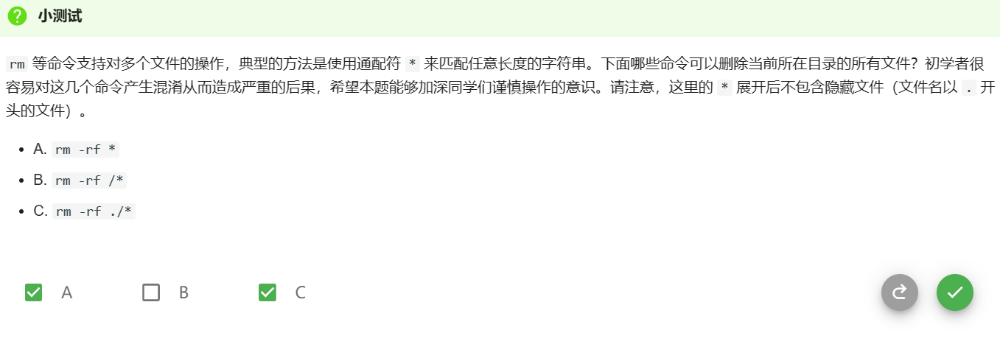

Linux指令操作记录
本文用来记录笔者学习OS过程中掌握的Linux指令
查看命令详细用法
man (命令名)
目录操作
cd
cd ~
访问当前用户主目录 一般为/home/用户
OS实测：/home/git
cd .
访问当前目录(原地踏步)，常常结合其他目录使用
cd /
访问根目录
绝对访问
cd /文件/……
相对访问
cd 文件
cd 文件/
测试
转自os平台
ls
ls -a
查看当前目录下包括隐藏文件的所有文件
ls -l
一行呈现一个文件
tree
tree [选项] [目录名]
更高级的ls,可视化表达目录结构
选项
-a 列出全部文件（包含隐藏文件）。
-d 只列出目录。
mkdir
mkdir [选项] 目录名称
在当前目录下创建新目录
rmdir
rmdir [选项] 目录名称
删除当前目录下对应名称的目录，只能是空目录
pwd
查看当前目录的绝对路径
文件操作
touch
touch [选项] 文件名
当文件存在时更新文件的时间戳，当文件不存在时创建新文件
rm
rm -r 文件
递归删除目录及其内容，删除非空目录必须有此选项，否则无法删除。
rm -f 文件
强制删除，不提示用户确认，忽略不存在的目录。
rm -i 文件
逐一提示用户确认每个将要被删除的文件。
测试
转自OS平台

中间的 rm -rf * 为删除本机所有文件
笔者当时在OS测试机上打了这个，看着刷屏的删除文件以为OS就要当场结束了（悲），还好没权限，不说了，先去换条裤子T-T。
cp
cp [选项] 源文件 目标路径
将源文件（也可以是目录）复制为目标路径对应的文件（如果目标路径是文件）或复制到目标路径（如果目标路径是目录）。
cp -r 源文件 目标路径
递归复制目录及其子目录内的所有内容
mv
mv [选项] 源文件 目标路径
将源文件（也可以是目录）移动为目标路径对应的文件（如果目标路径是文件）或移动到目标路径（如果目标路径是目录）。
mv -r 源文件 目标路径
递归移动目录及其子目录内的所有内容。
diff
diff -b 文件1 文件2
不检查空白字符的不同。
diff -B 文件1 文件2
不检查空行。
diff -q 文件1 文件2
仅显示有无差异，不显示详细信息。
Vim操作
打开文件
vim 文件名（同目录下）
vim 绝对路径
插入模式
按I
底线命令模式
1.ESC
2.左shift+;
保存退出
输入:wq
查找操作
find
find [路径] <选项>
在给定路径下递归地查找文件，输出符合要求的文件的路径。如果没有给定路径，则在当前目录下查找。
find [路径] -name <文件名>
指定查找文件名字
备注
根据文件属性找文件
grep
grep [选项] PATTERN FILE
（PATTERN是匹配字符串，FILE是文件或目录的路径）
选项
-a 不忽略二进制数据进行搜索。
-i 忽略大小写差异。
-r 从目录中递归查找。
-n 显示行号。
快捷键
Ctrl+C 终止当前程序
Ctrl+Z 挂起当前程序
Ctrl+D 终止当前输入
Ctrl+L 清屏
Ctrl+S 暂停终端
Ctrl+Q 恢复终端
Makefile
创建Makefile文件
文件格式如下：1
2
3
4
5target: dependencies
command 1
command 2
...
command n
例如，构建HelloWorld:1
2
3
4all: hello
hello: hello.c
gcc -o hello hello.c
ctags
ctags 是一个方便代码阅读的工具，我们用到的功能是代码跳转功能。
食用方法
转自OS教程：
hello.c:
1 |
|
ctags_test.h:1
2
3
4
5
struct Pair {
int a;
int b;
};
保存并退出 Vim，执行命令 ctags -R *，就会发现在该目录下出现了新的文件 tags——这是 ctags 为我们创建的符号名索引文件。此时我们就能使用 ctags 的功能了.
使用 Vim 打开 hello.c 文件，将光标移动到 a 或 b 上，按下 Ctrl+]，就可以跳转到结构体中 a或 b 的定义处。再按下 Ctrl+O就可以返回跳转前的位置。
tmux
进入
输入tmux
左右分屏
Ctrl+B后%
上下分屏
Ctrl+B后”
切换窗格
Ctrl+B后上下左右
关闭窗格
Ctrl+B后X
分离会话
Ctrl+B后D
查看会话
tmux ls
恢复会话
tmux a -t 会话名称
Git常用
git init
把当前目录变成一个空的 Git 仓库
git clone (URL)
克隆一个已有的储存库到当前目录下
git status
查看当前分支的状态
git add (filename)
一个新文件或者已经修改过的文件加入暂存区中
一般用：git add .（全部添加）
git restore
git restore (filename) 来撤销文件修改，回退上一个commit。 (未add)
git restore —staged (filename) 取消暂存。 (已add)
git checkout
git checkout 分支名称
切换分支
git commit
git commit -m
git push
本地的 commit 推送到一个远程仓库
git pull
将远程新建的分支下载到本地并合并
Shell
添加运行权限
chmod +x 文件名
编写
第一行
指定脚本的默认运行程序1
#!/bin/bash
这里指定Bash
第二行
可选注释
第三行
正文程序
写法
变量
定义
无需指定类型1
var_name=value
取值
1 | \$var_name |
参数
$1,$2,$3……
$# 传递的参数个数
$* 一个字符串，内容是传递的全部参数
条件与循环
if
1 | if condition1 |
while
1 | while condition |
函数
定义
1 | function fun_name() { |
function 和 () 可以省略其中一个。
返回语句可选，一般返回[0,255]之间的整数。
调用方法
1 | fun_name param1 param2 ... paramN |
重定向和管道
重定向
标准输出
> 是 1> 的简写
>覆盖原文
>>追加原文最后
标准错误输出
使用2>
标准输入
管道
1 | command1 | command2 | command3 | ... |
以上内容是将 command1 的输出传给 command2 的输入，command2 的输出传给 command3 的输入，以此类推….
Sed
格式
sed [选项] ‘命令’ 输入文本
选项
-n：安静模式，只显示经过sed处理的内容。否则显示输入文本的所有内容。
-i：直接修改读取的档案内容，而不是输出到屏幕。否则，只输出不编辑。
命令
<行号>a<内容>： 新增，在行号后新增一行相应内容。行号可以是“数字”，在这一行之后新增，也可以是“起始行，终止行”，在其中的每一行后新增。当不写行号时，在每一行之后新增。使用$表示最后一行。后面的命令同理。
<行号>c<内容>：取代。用内容取代相应行的文本。
<行号>i<内容>：插入。在当前行的上面插入一行文本。
<行号>d：删除当前行的内容。
<行号>p：输出选择的内容。通常与选项-n一起使用。
s/(re)/(string)：将(re)（正则表达式）匹配的内容替换为(string)。